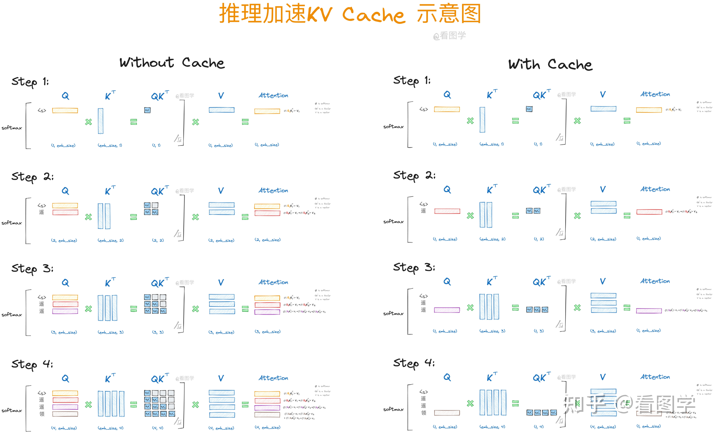
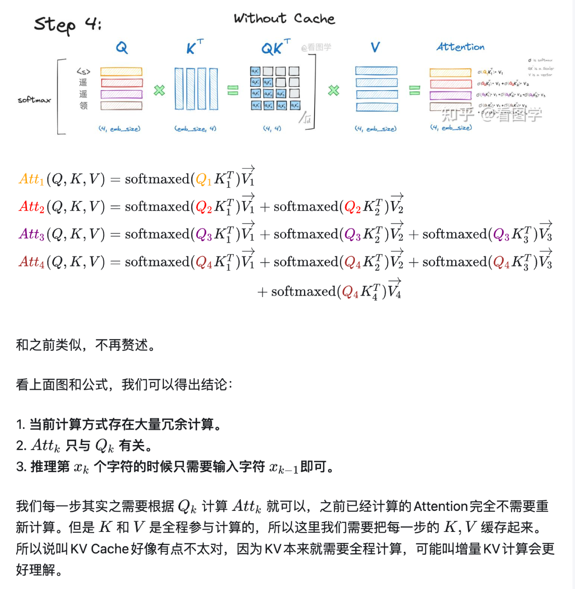
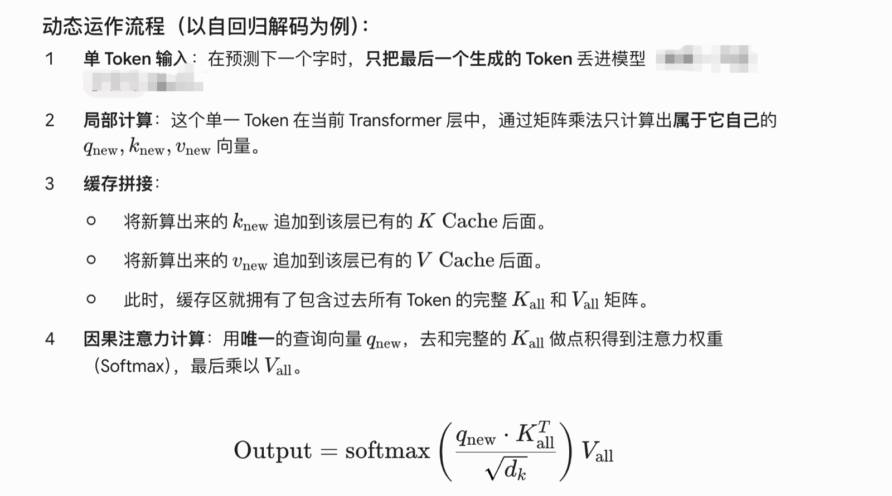

2 KV Cache
KV Cache
KV Cache 是自回归 Transformer 推理中常用的加速功能，主要用于 decoder-only 模型或 encoder-decoder 模型的 Decoder 生成阶段。
由于 Decoder 有 Causal Mask，当前新 token 只需要关注历史 token 和自身，不会关注未来 token，从而使得前面已经计算的K和V可以缓存起来。
在自回归生成过程中，历史 Token 的 Key 和 Value 一旦计算完成就不会改变，因此将它们缓存起来，只需为新 Token 计算 Q/K/V，并利用缓存的 K/V 完成注意力计算，从而避免重复计算，大幅提升推理效率。

没有缓存

有缓存

Decoder 推理分Prefill和Decoding两个阶段
- Prefill：一次性并行处理输入 prompt，初始化 KV Cache，并根据最后一个token生成第一个输出 token
- Decoding：逐个生成后续 token，每步只为新 token 计算 Q/K/V，并复用历史 KV Cache 做注意力计算